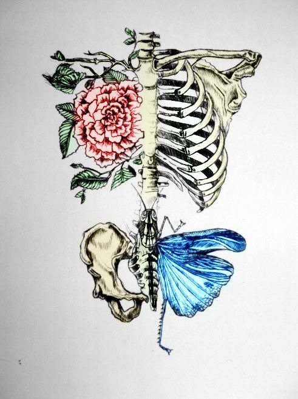

Human Body Trivia
Think you know your body? Take this simple quiz to find out!

Time remaining: 20 seconds
1. Which is NOT a muscle in your arm?
Biceps
Triceps
Deltoids
Latisumus Dorsi
2. In which type of muscle contraction does a muscle fire, but there is no movement at the joint?
Isometric contraction
Eccentric contraction
Freeze contraction
Concentric contraction
3. What is the body's main nutritional energy source?
Fat
Carbohydrates
Protein
Sugar
4. How many quadriceps muscles do the legs have total?
2
8
4
6
5. The deepest layer of abdominal muscles are?
Rectus abnominis
6 pack abs
Obliques
Transverse abdominis